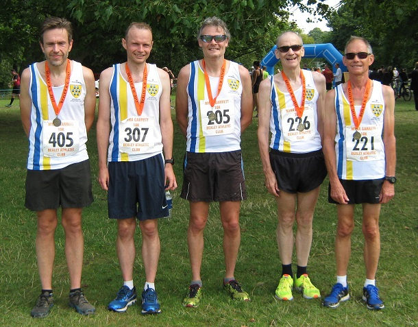

Eight SAC runners tackled the Kent GP Bexley 10k at Danson Park on 23rd July, with James Graham winning the M60 category and Keith Dowson leading the team home in tenth and 2nd M50. James' sixth win in the M60 GP should ensure a successful defence of his Kent GP M60 title. The SAC results were:
| Pos- ition | Bib- No. | Finish Time | Chip Time | Name | Gen- der | Cat- egory | Club or Team | Rank |
|---|---|---|---|---|---|---|---|---|
| 10 | 205 | 00:38:05 | 00:38:04 | KEITH DOWSON | M | M50 | Sevenoaks AC | 1 |
| 15 | 307 | 00:38:49 | 00:38:46 | ANDREW MILNE | M | SM | Sevenoaks AC | 2 |
| 31 | 405 | 00:40:50 | 00:40:48 | DANIEL WITT | M | M40 | Sevenoaks AC | 3 |
| 42 | 221 | 00:41:27 | 00:41:25 | JAMES GRAHAM | M | M60 | Sevenoaks AC | 4 |
| 48 | 202 | 00:41:50 | 00:41:47 | CHRIS DESMOND | M | M50 | Sevenoaks AC | 5 |
| 67 | 386 | 00:44:08 | 00:44:01 | STUART THOMPSON | M | M40 | Sevenoaks AC | 6 |
| 102 | 226 | 00:46:51 | 00:46:43 | SIMON HALLPIKE | M | M60 | Sevenoaks AC | 7 |
| 239 | 290 | 01:02:21 | 01:02:06 | SYLVIA LEWIS | F | W55 | Sevenoaks AC | 8 |
The full results are here.
